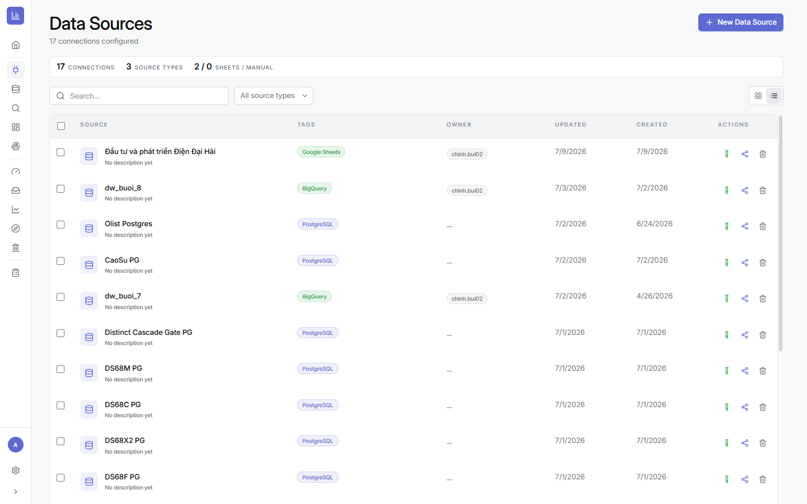
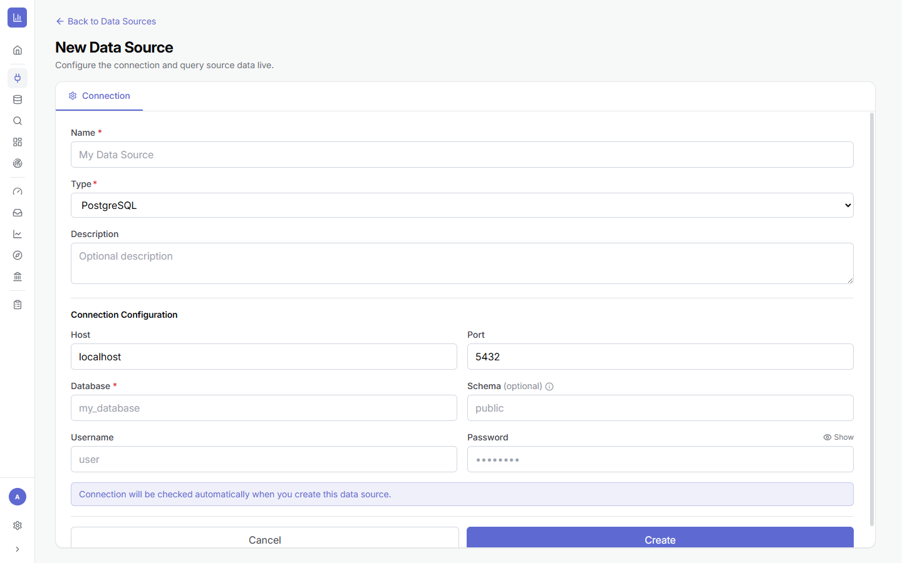
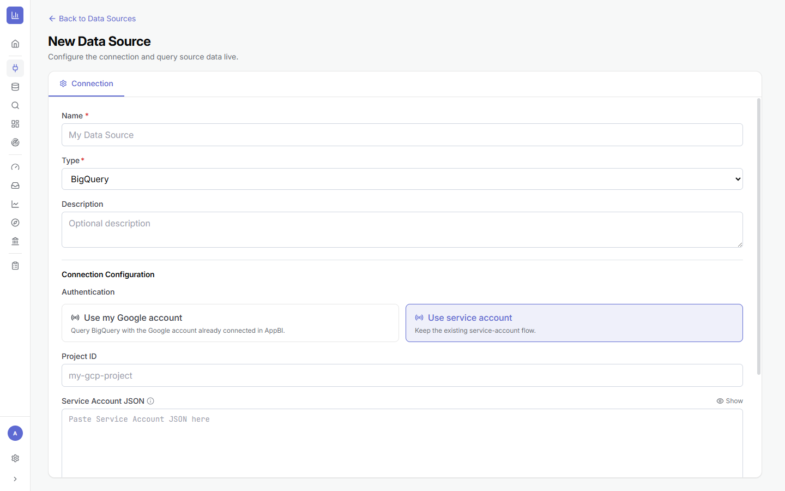
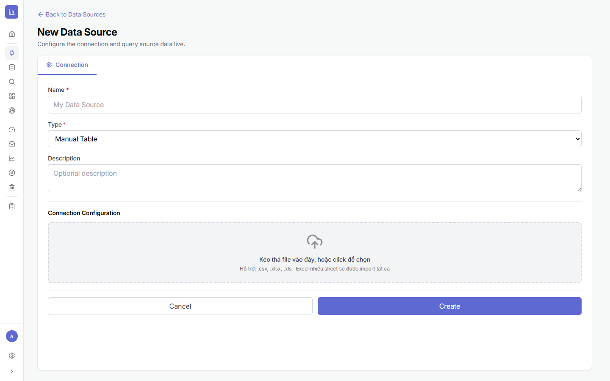

1.1Màn hình Data Sources — nơi quản lý mọi kết nối
Là gì: trang Data Sources liệt kê toàn bộ nguồn đã kết nối. Đây là nơi bạn tạo mới, tìm kiếm, lọc theo loại, kiểm tra kết nối, chia sẻ và xoá nguồn.
⚙ Cách mở & đọc màn hình
- Ở thanh điều hướng trái, bấm biểu tượng ổ cắm 🔌 (Data Sources).
- Trên cùng là các thẻ thống kê: số kết nối, số loại nguồn, số Sheets / Manual.
- Dùng ô Search để tìm theo tên, hoặc bộ lọc All source types để lọc theo loại (PostgreSQL, BigQuery…).
- Mỗi dòng hiển thị: tên nguồn, nhãn loại (PostgreSQL/BigQuery/Google Sheets…), chủ sở hữu, ngày cập nhật/tạo, và cột Actions.
- Ở cột Actions có 3 nút: Test connection (biểu tượng tia — kiểm tra kết nối), Share (chia sẻ), Delete (xoá).
- Góc trên phải có nút chuyển xem dạng lưới / dạng bảng.

1.2Tạo nguồn mới & 5 loại nguồn được hỗ trợ
Là gì: AppBI hỗ trợ 5 loại nguồn: PostgreSQL, MySQL, BigQuery, Google Sheets và Manual Table (tải file Excel/CSV). Sau khi bấm tạo, hệ thống tự kiểm tra kết nối ngay.
⚙ Các bước chung
- Bấm + New Data Source (Tạo nguồn dữ liệu) ở góc trên phải.
- Nhập Name (tên nguồn, bắt buộc *).
- Chọn Type (loại nguồn) — phần cấu hình bên dưới sẽ đổi theo loại bạn chọn.
- (Tuỳ chọn) nhập Description để đồng đội hiểu nguồn dùng cho việc gì.
- Điền phần Connection Configuration (xem chi tiết từng loại bên dưới).
- Bấm Create. Dòng chữ “Connection will be checked automatically…” nghĩa là kết nối sẽ được test tự động — nếu sai, hệ thống báo lỗi ngay tại đây.
a) PostgreSQL / MySQL — cơ sở dữ liệu quan hệ
Điền các trường kết nối tiêu chuẩn:
- Host (ví dụ
localhosthoặc IP/tên miền máy chủ) và Port (PostgreSQL mặc định5432, MySQL3306). - Database (bắt buộc) — tên database cần đọc.
- Schema (tuỳ chọn, mặc định
publicvới PostgreSQL). - Username và Password — bấm Show để xem lại mật khẩu vừa nhập.

b) BigQuery — kho phân tích của Google
BigQuery có 2 cách xác thực, chọn 1 trong 2 ở phần Authentication:
- Use my Google account — dùng tài khoản Google đã kết nối sẵn trong AppBI (nhanh, hợp cho cá nhân).
- Use service account — dán Service Account JSON (khoá dịch vụ). Hợp cho môi trường vận hành/chia sẻ đội nhóm vì không phụ thuộc tài khoản cá nhân.
Sau đó nhập Project ID (ví dụ my-gcp-project); nếu chọn service account thì dán nội dung JSON vào ô Service Account JSON.

c) Google Sheets — bảng tính
⚙ Cách làm
- Chọn Type = Google Sheets, kết nối tài khoản Google.
- Chọn spreadsheet và sheet cần dùng.
- Bấm Create — dữ liệu được đọc trực tiếp từ Google Sheets mỗi lần xem.
d) Manual Table — tải file Excel / CSV
Khi dữ liệu chỉ nằm trong file, chọn Manual Table rồi kéo-thả file vào vùng tải lên (hoặc bấm để chọn file).
- Hỗ trợ định dạng
.csv,.xlsx,.xls. - File Excel nhiều sheet sẽ được nạp tất cả các sheet thành nhiều bảng.

.csv/.xlsx/.xls; Excel nhiều sheet import tất cả.1.3Kiểm tra kết nối & sửa cấu hình
Là gì: sau khi tạo, bạn có thể kiểm tra lại kết nối bất cứ lúc nào và cập nhật thông tin (đổi mật khẩu, đổi host…) một cách an toàn.
⚙ Cách làm
- Ở danh sách, bấm nút Test connection (biểu tượng tia) trên một nguồn để kiểm tra nhanh mà không cần mở ra.
- Muốn sửa: bấm vào tên nguồn để mở chi tiết, rồi bấm Edit.
- Sửa các trường cần thiết. Mật khẩu/khoá để trống = giữ nguyên giá trị cũ.
- Bấm Update/Save — kết nối được kiểm tra lại tự động; nếu lỗi sẽ báo ngay.

1.4Chia sẻ & phân quyền nguồn
Là gì: cấp quyền cho người/nhóm khác dùng nguồn với 3 mức Viewer (Xem) / Editor (Sửa) / Full (Toàn quyền). Cơ chế chia sẻ này dùng nhất quán cho cả Dataset, Chart, Dashboard và Workboard — nắm ở đây là hiểu toàn hệ thống.
⚙ Cách làm
- Bấm biểu tượng Share trên nguồn cần chia sẻ.
- Nhập email người dùng (hoặc chọn nhóm/team).
- Chọn vai trò Viewer / Editor / Full.
- Bấm Share. Có thể thu hồi quyền bất cứ lúc nào trong cùng hộp thoại.

1.5Xong Chương 1 — Checklist & lỗi thường gặp
Trước khi sang Chương 2 (Dataset), hãy chắc chắn:
- ✅ Đã tạo được ít nhất 1 nguồn và Test connection báo thành công.
- ✅ Nguồn có tên dễ hiểu theo nghiệp vụ.
- ✅ Bạn biết nguồn này chứa những bảng nào mình sẽ cần (không cần lấy hết cả schema).
➡️ Tiếp theo: Chương 2 · Tạo Dataset — gom các bảng từ nguồn này thành một Dataset sẵn sàng để phân tích.